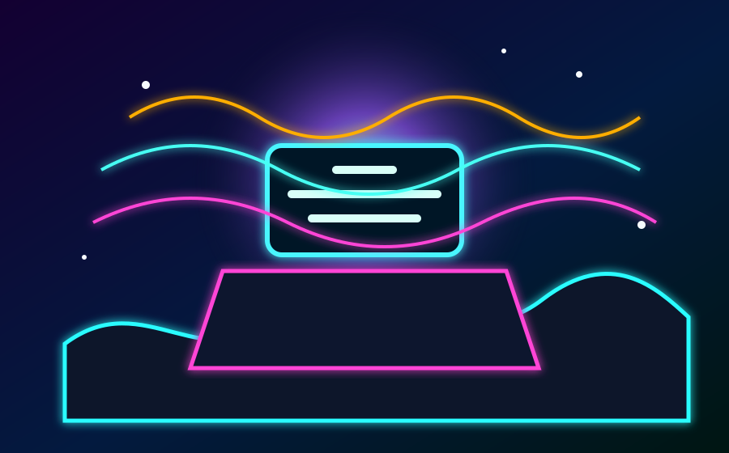
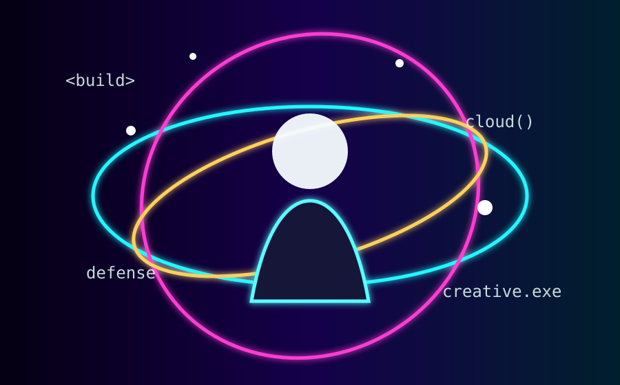
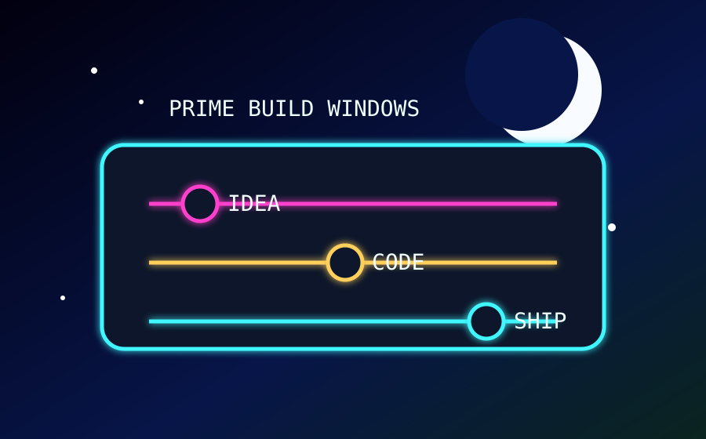
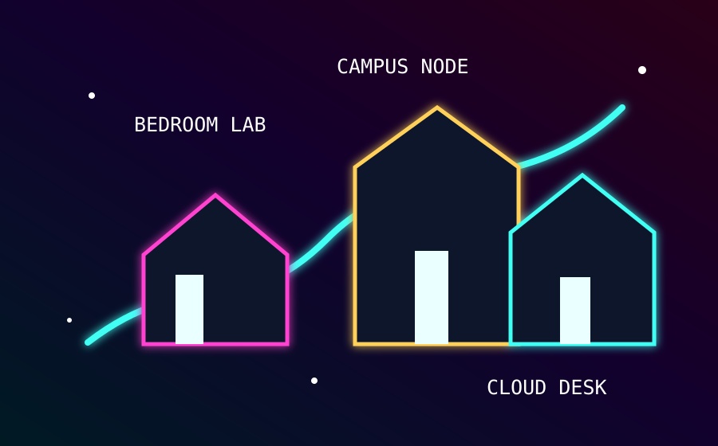
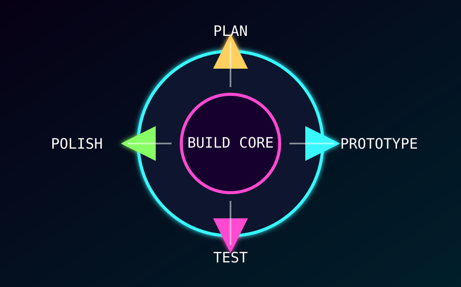
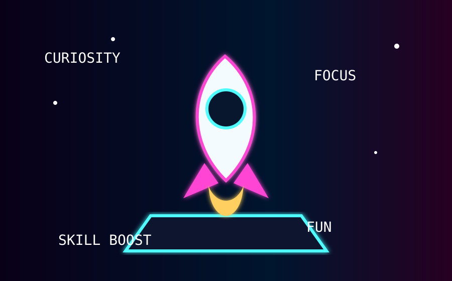
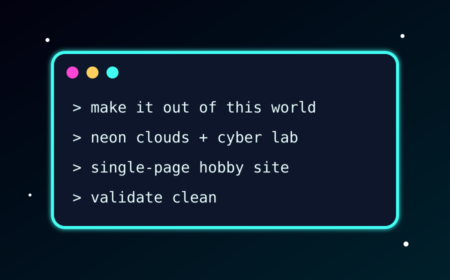

What: Creative Web Labs
Cyberpunk Cloud Labs is my personal way of building small worlds on the web. I mix layout, animation, cloud-themed visuals, and beginner-friendly defensive technology concepts into projects that look alive.
The goal is not just to finish assignments. The goal is to make each page feel like it has an identity, a theme, and a reason for someone to click around.

Prompt used: “Create an out-of-this-world cyberpunk cloud workstation with glowing panels, vaporwave lighting, and a futuristic student web-lab mood.”
Who: The Builder Behind It
I am Richard Siebenlist Jr., and this hobby fits the same energy as my course pages: resilient shark mindset, technical curiosity, and passionate for interfaces with unique user experiences.
I like projects that feel hands-on. If a page can teach something, move smoothly, and look different from the default web, then it is worth building.
- I enjoy learning how modern web ecosystems fit together.
- I like experimenting with cyber-themed layouts in a safe, defensive, educational way.
- I keep pushing pages past plain templates until they feel custom.

Prompt used: “Design a futuristic portrait scene of a student developer surrounded by orbiting code rings, cloud icons, and cyber-lab energy.”
When: Best Build Windows
This hobby works best when the day gets quiet and there is enough time to test ideas without rushing the details.
My favorite sessions start with one visual target, one coding challenge, and one validation pass before I call the project finished.
| Time | Best Use | Energy |
|---|---|---|
| Evening | Sketch layout ideas and choose the color story. | Creative |
| Late Night | Code the page, animate pieces, and fix layout problems. | Focused |
| Next Day | Validate, polish, resize assets, and test navigation. | Critical |

Prompt used: “Generate a neon night schedule board with idea, code, and ship phases glowing under a cosmic moon.”
Where: Build Locations
The lab is not one place. It follows the laptop, the course workspace, and the browser preview.
Different locations change the kind of work I get done, so I use each spot for a different part of the build.

Prompt used: “Create a glowing cyberpunk map showing a bedroom lab, campus node, and cloud desk connected by a bright route.”
How: My Build Method
I build in passes. First comes the concept, then the structure, then the style, then the validation sweep.
That keeps the work creative without letting the page break, drift away from the assignment, or become impossible to maintain.
| Step | Action |
|---|---|
| 1 | Pick a theme and write the section content first. |
| 2 | Build semantic HTML with header, main, footer, nav, sections, figures, and tables. |
| 3 | Add CSS effects, responsive layouts, JavaScript switching, and validation links. |

Prompt used: “Make a futuristic circular workflow core with plan, prototype, test, and polish phases in neon cyber colors.”
Why: The Reason I Keep Building
I like this hobby because every project creates proof that an idea can turn into something interactive.
It also makes classwork feel personal. Instead of submitting another plain page, I can practice real design decisions and sharpen my development habits.
- It trains patience because the smallest detail can change the whole page.
- It builds confidence because every finished feature is visible progress.
- It keeps learning exciting because the web always has another tool, pattern, or effect to explore.

Prompt used: “Create a neon rocket launching out of a laptop to symbolize curiosity, skill growth, focus, and fun.”
AI Prompts: Build Receipts
AI was used to help generate code structure, creative copy, styling ideas, and SVG image concepts for this hobby site.
The prompts below summarize the exact direction used to shape the page while keeping the final site aligned with the assignment checklist.
- “Build a standalone ITIS3135 hobby site with sections that behave like pages, embedded CSS, validation links, accessibility support, and a default What page.”
- “Make the site modern, creative, unique, out of this world, and based on my tech/cyber/cloud style.”
- “Create consistent AI-style images for each section using neon cyberpunk cloud-lab visuals.”

Prompt used: “Show a futuristic AI prompt terminal with commands about out-of-this-world design, neon clouds, cyber labs, and clean validation.”